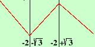
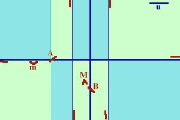
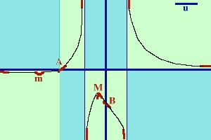

Ti conviene porre la finestra sullo schermo al
massimo
Studiare la funzione:
x + 2
y = ----------------
x2- 1
- Determinazione del Campo di esistenza
Essendo una funzione fratta il
campo di esistenza e' dato dai valori
che rendono il denominatore diverso da zero
x2- 1
 0 0
x
 1 1
C.E. {x  R / x
-1 e x
1} R / x
-1 e x
1}
Il campo di esistenza e' dato da tutti i valori reali
diversi da -1 e da +1
- Determinazione del tipo di funzione
E' una funzione fratta
Non e' ne' pari ne' dispari ne' periodica
- Intersezione con gli assi
Per trovare il punto di intersezione con l'asse delle x
faccio il sistema tra la funzione e l'asse delle x
 x + 2
x + 2
y = -----------
x2- 1
y = 0
x + 2
--------- = 0
x2- 1
y = 0
Una frazione e' zero se il numeratore vale zero quindi
x + 2= 0
y = 0
x = -2
y = 0
Il punto di intersezione con l'asse x vale
A = (-2 , 0)
Trovo ora il punto di intersezione fra la funzione e l'asse y
x + 2
y = -----------
x2- 1
x = 0
Sostituisco
y = -2
x = 0
Il punto di intersezione con l'asse y vale
B = ( 0 , -2)
- Valori agli estremi del campo di esistenza
Essendo il campo di esistenza tutto R eccetto i valori
-1 e +1 questa ricerca puo'
essere saltata perche' sara' compresa nella ricerca degli
asintoti
- Positivita' e negativita'
dobbiamo trovare i valori per cui la funzione e' maggiore di
zero
x + 2
-------  0 0
x2- 1
E' una frazione, per essere positiva numeratore e denominatore
devono avere segni concordi
NUM x + 2  0 0
DEN x2- 1 0
Il denominatore e' un'equazione di secondo grado e sara'
positivo per valori esterni all'intervallo delle radici
Risolvendo
NUM x -2
DEN x  - 1 V
x 1 - 1 V
x 1
faccio lo schema
x -2
- - - - - (-2) + + + + + + + + + + + + + + +
x -1 V
x 1
+ + + + + + + + + +(-1) - - - - - (+1) + + + + + +
f(x)0
- - - - - (-2) + + + + (-1) - - - - - (+1) + + + + + +
da meno infinito a meno 2 la funzione e' negativa
 tra meno 2 e -1 la funzione e' positiva
tra meno 2 e -1 la funzione e' positiva
tra -1 e +1 la funzione e' negativa
da +1 a piu' infinito la funzione e' positiva
Nello schema a fianco ho segnato in verde scuro le zone che non
contengono la funzione
- Determinazione degli asintoti
Ricerca degli
asintoti verticali
(generalmente esistono quando si
hanno punti di discontinuita')
-
Primo punto di discontinuita' x = -1
x + 2
limx->-1 -------- =(-1+2)/(1-1) =
1/0 = 
x2 - 1
quindi la retta
x = -1
e' un asintoto verticale
Per tracciarlo al meglio calcoliamo i limiti destro e sinistro della
funzione nel punto -1
-
limite sinistro:
x + 2
limx->-1- --------
x2 - 1
per calcolare un limite di questo genere basta sostituire alla x un valore
un pochino piu' piccolo di -1 (ad esempio -1,1 ) e fare il conto dei segni
- 1,1 + 2
------------- 0
(-1,1)2 - 1
il numeratore e il denominatore
sono entrambi positivi quindi
l'espressione e' positiva cioe'
x + 2
limx->-1- -------- =
+
x2 - 1
-
limite destro:
x + 2
limx->-1+ --------
x2 - 1
per calcolare un limite di questo genere basta sostituire alla x un valore
un pochino piu' grande di -1 (ad esempio -0,9 ) e fare il conto dei segni
-0,9 + 2
------------- 0
(-0,9)2 - 1
il numeratore
e' positivo mentre il denominatore
e' negativo quindi
l'espressione e' negativa cioe'
x + 2
limx->-1+ -------- =
-
x2 - 1

quindi il risultato e' quello della figura a fianco
-
Secondo punto di discontinuita' x = +1
x + 2
limx->+1 -------- =(+1+2)/(1-1) =
3/0 =
x2 - 1
quindi la retta
x = 1
e' un asintoto verticale
Per tracciarlo al meglio calcoliamo i limiti destro e sinistro della
funzione nel punto 1
-
limite sinistro:
x + 2
limx->+1- --------
x2 - 1
per calcolare un limite di questo genere basta sostituire alla x un valore
un pochino piu' piccolo di 1 (ad esempio 0,9 ) e fare il conto dei segni
0,9 + 2
------------- 0
(0,9)2 - 1
il numeratore
e' positivo mentre il denominatore e' negativo
quindi
l'espressione e' negativa cioe'
x + 2
limx->+1- -------- =
-
x2 - 1
-
limite destro:
x + 2
limx->+1+ --------
x2 - 1
per calcolare un limite di questo genere basta sostituire alla x un valore
un pochino piu' grande di 1 (ad esempio 1,1 ) e fare il conto dei segni
1,1 + 2
------------- 0
(1,1)2 - 1
sia il numeratore che il denominatore sono
positivi quindi
l'espressione e' positiva cioe'
x + 2
limx->+1+ -------- =
+
x2 - 1

quindi il risultato e' quello della figura a fianco
Vediamo ora la ricerca dell' asintoto orizzontale od obliquo
x + 2
limx->
----------- = 0
x2 - 1
Il numeratore ha
potenza inferiore rispetto al denominatore quindi
va all'infinito piu' lentamente quindi, quando sopra e' ancora
un numero sotto
e' gia' infinito e numero diviso infinito vale zero
asintoto orizzontale y=0
In un liceo in cui ho insegnato vi era anche l'uso di determinare
per l'asintoto orizzontale se la funzione si trovi sopra o sotto
l'asintoto
stesso
Penso che questo sia sovrabbondante, comunque se vuoi vedere
un esempio
- Determinazione della derivata prima
faccio la derivata di
x + 2
y = ----------------
x2- 1
E' la derivata di un
quoziente
1·(x2- 1)
- (x + 2)·2x
y' = -----------------------------
(x2-
1)2
Eseguendo i calcoli
-x2
- 4x - 1
y' = -----------------
(x2-
1)2
- Crescenza e decrescenza
pongo la derivata prima maggiore di zero per trovare le
zone ove la funzione e' crescente
-x2
- 4x - 1
-----------------
0
(x2-
1)2
E' una frazione, per essere positiva numeratore e denominatore
devono avere segni concordi
Il denominatore, essendo un quadrato sara' sempre positivo
Il numeratore e' un'espressione di secondo grado, considero
l'equazione associata
-x2
- 4x - 1 = 0
Cambio di segno
x2
+ 4x + 1 = 0
Risolvo
(formula ridotta)
-2  [(2)2 - 1] [(2)2 - 1]
x1,2 =
---------------------
1
x1,2=
-2 3
i valori sono
x1 = -2
- 3
x2 = -2
+ 3
il valore
approssimato sara'
x1 = -3,7
x2= -0,3
Essendo il Delta maggiore di zero ed il primo coefficiente
minore di zero la disequazione sara' verificata per
valori interni all'intervallo delle radici cioe'
per valori da meno
infinito ad x1
la funzione e' negativa
per valori da x1 ad
x2 la funzione e' positiva
per valori da x2 a piu'
infinito la funzione e' ancora negativa.
Facciamo lo schema:
NUM
-2 - 3  x
-2 + 3
x
-2 + 3
DEN sempre positivo
riporto su un grafico
NUM 0
- - - - -
(-2-3) + + + + + + + +
(-2+3)- - - - - - - - - -
DEN 0
+ + + + + + + + + + + + + + + + + + + + + + + + + + +
f(x) 0
- - - - -
(-2-3) + + + + + + + +
(-2+3)- - - - - - - - - -
per valori da meno
infinito a -2- 3
la funzione e' decrescente 3
la funzione e' decrescente
per valori da -2-3 a
-2+3 la funzione e' crescente
per valori da -2+3 a piu'
infinito la funzione e' ancora decrescente.

Determinazione dei Massimi e minimi
Senza troppi discorsi se guardi la figura precedente vedi subito
che-2-3 e' un minimo e -2+3 e' un massimo, se invece vogliamo fare le cose
precise facciamo i seguenti ragionamenti:
- siccome per valori da meno
infinito a
2-3
la funzione e' decrescente e
per valori da
2-3 ad
2+3 la funzione e' crescente allora
in
2-3 abbiamo un punto di minimo
-
siccome per valori da
2-3 ad
2+3 la funzione e' crescente e
per valori da
2+3 a piu'
infinito la funzione e' decrescente allora
2+3 e' un punto di massimo
Ora bisogna fornirsi di pazienza e calcolare le coordinate del punto
di massimo e del punto di minimo. Il risultato e'
Coordinate del minimo
-
x = -2 -
 3
valore approssimato circa -3,7 3
valore approssimato circa -3,7
-
3 - 2
y =
-------------------
valore approssimato circa 0,15
2
Coordinate del Massimo
-
x = -2 +3
valore approssimato circa -0,3
-
-2 -3
y =
-------------------
valore approssimato circa - 1,8
2
Se vuoi vedere
i calcoli
Determinazione della derivata seconda
Come si fa di solito nelle funzioni fratte
possiamo trascurare la derivata seconda perche'
ormai abbiamo abbastanza dati con la derivata prima, e quindi
possiamo gia'
disegnare la funzione con buona approssimazione.
Determinazione della concavita', convessita' e flessi
Non avendo fatto la derivata seconda non tratteremo questo punto
(si tralascia di solito nelle funzioni razionali fratte perche'
in queste e' abbastanza semplice il metodo dello studio della derivata
prima mentre il metodo della derivata seconda solitamente
e' piuttosto laborioso)
Determinazione di eventuali
ulteriori punti appartenenti alla funzione
Non ci servono punti aggiuntivi
Grafico della funzione
Ora mettiamo in un grafico tutti i dati trovati

Il minimo e' un po' forzato, in effetti con
l'unita' di misua scelta e' vicinissimo all'asse x
Poi partendo da meno infinito congiungo i punti con una riga continua
(nera)

|